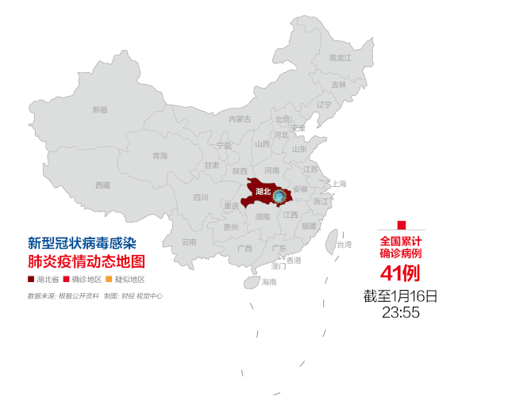
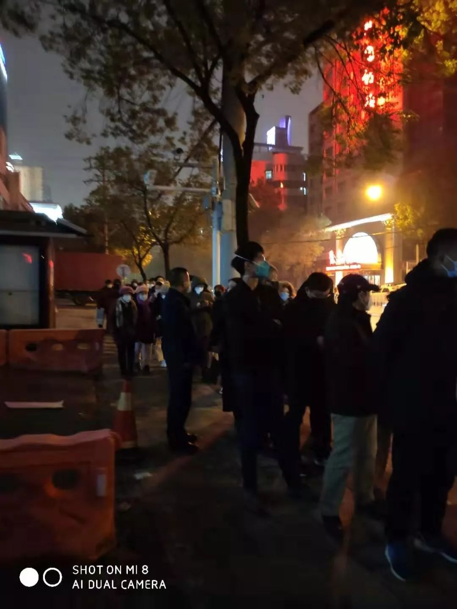
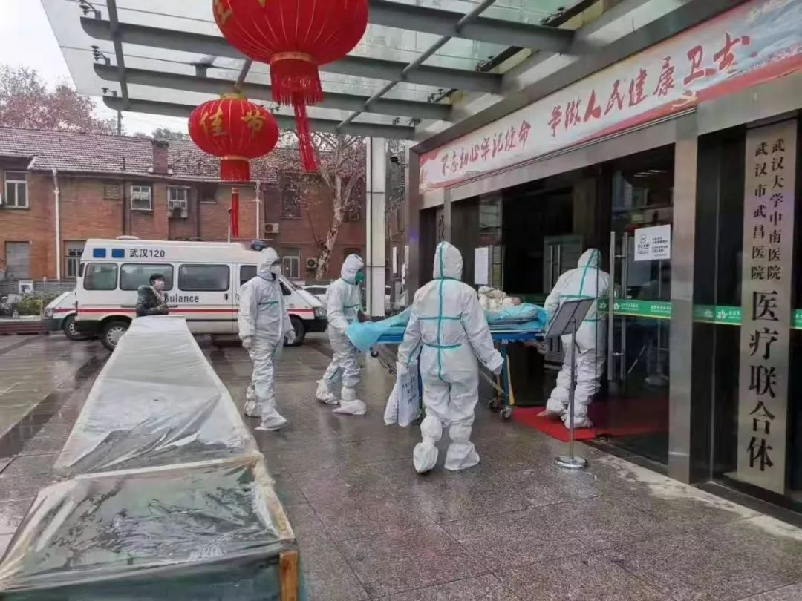
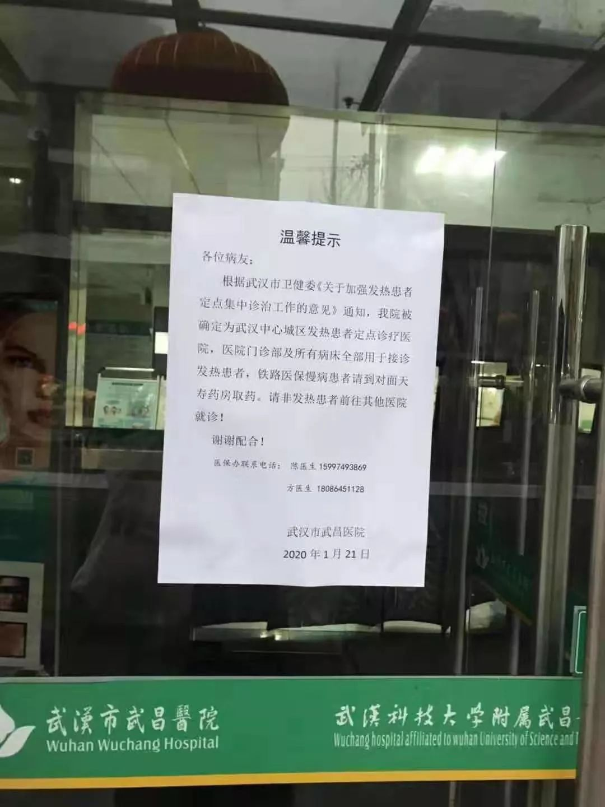

汉口医院直击：何时不再一床难求
原文链接 备份链接 【财新网】（实习记者 张舒琳 记者 马丹萌） 门诊排起长龙，留观区一“床”难求 武汉市汉口医院，是武汉收治新型冠状病毒患者的定点医院之一。发热门诊大厅内，等待问诊的患者排起长长的队伍。大厅前后均只打开一道玻璃门，两 …

七家二级医院被征用，成为收治新型冠状病毒患者的定点医院，但医护人员防护设备紧缺，隔离病房仍未完工。初露端倪的临时医院，最快也要六天才能建成
文 |《财经》信娜 陈晶 房宫一柳 实习记者 朱贺
编辑 | 王小
“到底什么时候能够确诊，什么时候能够住院？”
站在武汉多家医院的发热门诊内，焦虑的等候人群想知道答案。2020年1月23日17点，武汉市七医院发热门诊内，李帆与64岁的父亲在等待确诊。此时，距离他们到医院，已经过去了21个小时，周围和他们一样等待多时者并不在少数。
按武汉市政府安排，从1月23日起，所有发热在37.3度以上的病人全部到七家定点医院就诊，有关人士在现场看到的情况是，这些医院一直人满为患。
李帆和父亲候诊的武汉市七医院，是7家收治发热病人的定点医院之一。其余6家为：武汉市汉口医院、市红十字会医院、市四医院西院区、市九医院、市武昌医院、市五医院，7家均为二级医院。
1月22日，湖北省在通报新型冠状病毒感染肺炎疫情防控的会议上，武汉市副市长陈邂馨表示，计划安排上述7家医院腾出3400张床位，专门收治发热患者。
现实是，陆续腾出来的床位不够用。在过去24小时，因没有足够可用的床位，武汉市先后有三家医院明确拒绝了李帆父亲的住院申请，他们才转而又来到市七医院。1月23日凌晨两点多，李帆父亲终于在七医院的门诊观察室接受治疗。
《财经》记者了解到，上述定点医院大多在1月21日下午收到通知，要求在1月23日将现有病人转移。之后，这些医院不再接诊其他疾病患者，成为肺炎患者的定点收治医院。如何在两天内转移病人、腾空病床，事实上成为巨大挑战。
而在专业人士看来，大量发热病人集中涌入上述医院，可能会加大交叉感染的风险。为此，7家医院需要一边腾空病床，一边做必要的病房改造。一位知情人士告诉《财经》记者，临床一线医生防护措施不到位，但不得不仓促上阵，病房改造短期无法充分到位，致使门诊和病房并不能保障医务人员和病人的安全。
还有就是建新的临时医院集中救治，这被视为此前北京抗击非典的一条重要经验。
一位武汉设计院人士告诉《财经》记者，武汉将在武汉职工疗养院建临时医院，位置在武汉蔡甸知音湖区域，医院需在6天内建成。此前，面对非典疫情，北京曾在7天内建设了“小汤山”医疗点，两个月内收治了全国七分之一的非典病人。
截至1月23日17:50分，中国共确诊新型冠状病毒感染的肺炎病例618例，疑似429例。截至1月22日24时，湖北省累计报告444例，已治愈出院28例，死亡17例。

设计/黎立
“现在是无休止的排队”
1月23日17点，武汉市七医院发热门诊内，李帆与父亲仍在等待。
“大家都在等待，（用试剂盒）检测之后才能确定能不能收治入院”，已经等待了超过21个小时，李帆的父亲还没有轮上，“现在是无休止的排队”。
1月22日晚，李帆听说武汉市第七医院开始接诊发热患者，匆匆赶往发热门诊挂号处，“当时已经没有号可取，只能顺着往前排着走”。
《财经》记者从现场照片看到，1月22日晚10点，该医院发热门诊排队候诊人群，已蜿蜒至院外街道。

1月22日晚10点左右武汉市七医院门口排队等待就诊的患者。采访对象供图
24小时之内，李帆和家人走了四家医院。1月22日，在武汉市第八医院复查，CT检查显示，李帆的父亲双肺感染。“接诊医生说，医院床位已满，实在收不下了”，李帆的朋友张可告诉《财经》记者。
这之后，他们去了汉口一家非定点医院，后又来到武昌医院。当晚8点到达发热门诊时，有将近200个人在排队，最终仍然未能入院，“这里也收不下，没床位”，张可说。

1月22日晚8点左右武昌医院里排队等待的人。采访对象供图
“没有床位，发热的病人没有确诊就先回家自己隔离。”武汉市某三甲医院一位医生告诉《财经》记者。
上周，李帆的父亲有些发热，到汉口医院就诊。医生口头告知其父回家隔离休息，称如果再有发烧等症状随时来医院复查。此前，他的父亲未曾去过华南海鲜市场。
医生没有给开药，于是只能自己买一些维生素C、板蓝根。在5天的自家隔离中，李帆的父亲一直高烧不退，病情不见好转。
1月23日凌晨两点多，李帆的父亲终于在市第七医院的门诊观察室接受输液治疗。由于病情不断加重，直到1月23日下午5点，李帆的父亲仍留在观察室接受观察。在观察室内外，挤满了戴着口罩的人群。
上述三甲医院医生说，大家都太紧张了，小感冒都往医院跑。患者一旦发现住所附近的医院不能就诊，就流动去下一家医院看，而几家定点医院都在市中心，发热病人这样流动挺让人担忧的。
有相似等待遭遇的还有从国外回武汉探亲的王木，1月19日下午，从国外回武汉探亲的王木持续发烧，后去武汉同济医院就诊，一进门就震惊于眼前的景象。发热门诊问诊台边，“里三层外三层”被人群围着。
她询问还要等多久？护士回复：没办法，你没看到这么多人吗，等不了就去其他医院吧。
1月20日，王木来到武汉普爱医院，依然是如同济医院相似的情景，“病人们都挤在医生诊室里围着医生”。
1月23日，武汉卫健委官网发布通告，此前，由辖区疾控中心将样本转运到市疾控中心，市疾控中心转运到省疾控中心进行核酸检测，每天可检测样本200多份。预计从采样开始到结果返回，当前约需要2天左右的时间。此前，样本需送到北京国家指定的检测机构，检测结果返回约需要3—5天。
由于发热门诊就诊人数增多，留观患者堆积，上述通告称，1月22日开始，武汉市制定部分医院及市疾控中心等具备相应防护级别的生物安全实验室，开展相关样本的病原核酸检测。
第一批加入检测的共10家机构，预计全部运行起来每天可检测样本近2000份。此外，武汉市计划紧急调运3万人份试剂盒发放到指定检测机构，目前已下发6000人份。
听到这样的消息，李帆留言：“但愿吧。”即使检测后，还要多久自己的父亲才能住院治疗？
“即刻起，医院不再接诊普通患者”
“1月22日，医院需开始接诊发热病人”。前一天晚上六点，该医院一名医生收到这样的通知。1月22日当日，一位值班医护人员在科室群里询问，“哪里可以领防护服”？当日晚间，该院发热门诊的一名急诊医生，只佩戴了普通的外科口罩。
1月22日晚，湖北省副省长、省新型冠状病毒感染的肺炎防控指挥部副指挥长杨云彦在发布会上介绍，在城区7家大型医院附近，选择了7家二级公立医院作为发热门诊的定点医院，转移病人、腾空病房全部用于接收发热病人。
从1月23日起，所有发热在37.3度以上的病人全部到这七家定点医院就诊。
此前两天，武昌医院院门口贴出的“温馨提示”上写着，医院被确定为武汉中心城区发热患者定点诊疗医院，铁路医保慢病患者请到对面药房取药。请非发热患者前往其他医院就诊。


另一家定点医院的措辞是“紧急公告”：医院确定为武汉市中心城区发热患者定点诊疗医院，全部用于接诊发热患者，“即刻起，我院不再接诊其他疾病患者”。
上述定点医院内，除发热病人外的原有病人，需由另外7家三级以上医院接管。这些在武汉市内的医院是：同济医院、协和医院、武大人民医院、武大中南医院、市一医院、市中心医院、市三医院。
上述某三级医院相关负责人告诉《财经》记者，从1月22日晚开始，该医院已经不收治新的发热病人了，只能去定点医院。
武汉市另一三甲医院相关负责人透露，现有病人继续治疗。医院内部分专家对口武汉市及省内部分区域的其他医院，负责管理、诊疗和指导。
1月22日，武汉大学人民医院的公告是，请体温超过37.3℃的患者前往其他医院就诊，也就是上述定点医院。
上述武汉武昌医院发布的通知提及，医院需开始进行相关准备工作，“具体开始接诊发热患者时间另行通知”。
1月23日，上海市组建首批医疗队援助湖北，共同应对新型冠状病毒感染肺炎疫情。《财经》记者了解到，共组建了3批医疗队，一批开展救治，另外两批待命。每批次135人。《财经》记者从复旦大学附属华山医院了解到，目前已派出医疗队，包括呼吸科和感染科的医生。
武汉的医院准备好了吗？
1月22日，上述某定点医院一科室护士长去相关科室领物资，却“领不到”。他们所指的物资是，防护服、医用口罩等。
在此前国家卫健委的通报提到，医护人员在从事与患者有密切接触的诊疗活动时，需穿戴一次性工作帽、防护眼镜、防护服等。
1月22日，国家卫健委的发布会上已证实，病毒可在人际间传播。已经出现人传人和医务工作者感染。这些“物资”也许是阻断病毒侵入的最后一道防火墙。
一则信息显示，武汉大学人民医院相关负责人发布，急需防护物资，当前奋战一线的医护都只能限量供应。《财经》记者致电武汉大学人民医院设备处的杨姓负责人，证实了该院缺少防护设备。
1月23日，武汉市新型肺炎防控指挥部发布通告，希望社会各界捐赠武汉市抗击疫情的医用耗材、防护用品等物资。已开通24小时电话接收社会各界爱心捐赠（武汉市红十字会电话：027-82788599，027-82210181，027-82812604，027-82858499，027-82856122。联系人：骆钢强 13297963117）。
武汉市红十字会一名工作人员告诉《财经》记者，缺医用口罩、缺防护服，具体数量不限。
除了紧缺的防护物资，隔离病房的改造也在仓促进行中。
1月23日下午4时，武汉市四医院西院区一名工作人员告诉《财经》记者，21日下午5点接到通知，22日上午8点钟医院停诊，预计25号可以开放接收病人。22日中午后开始对院区进行改造，“今明两天都在赶工”。
上述市四院工作人员称，政府部门要求两天改造完，但目前看来难度很大，“院内的指引标识都还没贴，工程和防护服的问题目前尚未解决，现在正在加固隔断。“如果病人大量涌进，我们却没有防护力度”。
1月23日，《财经》记者分别致电武汉市七医院及四医院西院区，其均为此次公布的新型病毒肺炎患者的定点医院，都表示，“正在改建病房，加固隔断”。
除了改造基础设施，上述市四院工作人员称，原来的住院病人需要清空，正在搬家，“今天还剩几十个病人没有转走”。整个病区将全部腾空， “按病情的轻、中、重来收治发热病人，一个病房有三四十张床”。
《财经》记者向一位知情人士了解到，市五医院正在新开辟出600张病床，一个病区30张床位，承接疑似或确诊为新型病毒肺炎患者。
上述医院的医生透露，要求1月23日晚18点前腾空现有病人。这距离她收到通知的间隔，仅两天。
（《财经》记者韩舒淋、陈亮、黄姝静对本文亦有贡献；文中李帆、张可、王木为化名）
本文由树木计划作者【财经杂志】创作，独家发布在今日头条，未经授权，不得转载
“武汉肺炎”疫情系列报道

▷ 点击图片查看
责编 | 黄端 duanhuang@caijing.com.cn
本文为《财经》杂志原创文章，未经授权不得转载或建立镜像。如需转载，请在文末留言申请并获取授权。
原文链接 备份链接 【财新网】（实习记者 张舒琳 记者 马丹萌） 门诊排起长龙，留观区一“床”难求 武汉市汉口医院，是武汉收治新型冠状病毒患者的定点医院之一。发热门诊大厅内，等待问诊的患者排起长长的队伍。大厅前后均只打开一道玻璃门，两 …
原文链接 备份链接 ********** *****他们很想回家，和孩子最近一次见面还是暑假。但谁也不敢回去。“万一有什么事，也不能把病毒扩散到别处，是不是？” ***** 6时35分，汉口站广场上，一队警务人员正在开会。 新京报记者 …
原文链接 备份链接 武汉正在该市蔡甸区职工疗养院，紧急设计建设一个有1000个床位的临时医院，用于集中收治新型冠状病毒肺炎患者。临时医院计划在2月3日前投入使用。 这是学“小汤山模式”。2003年，北京7天建成小汤山医院，接收680名 …
原文链接 备份链接 作者 | 第一财经 吴绵强 周芳 陈益刊 编辑 | 张富贵 为了遏制新型冠状病毒感染的肺炎扩散，按照武汉市新型冠状病毒感染的肺炎疫情防控指挥部通告，自1月23日10时起，武汉全市城市公交、地铁、轮渡、长途客运暂停运营； …
原文链接 备份链接 文 | 王彦入 王丹妮 程静之 殷盛琳 李晓芳 周航 叶雯 曾宪雯 编辑 | 王珊 陶若谷 33岁的刘科戴上两层口罩独自走进地铁，夹杂在路人中间。像他这样拉着行李箱的人并不少见，彼此间默契地保持着距离。三天前，他刚刚从 …